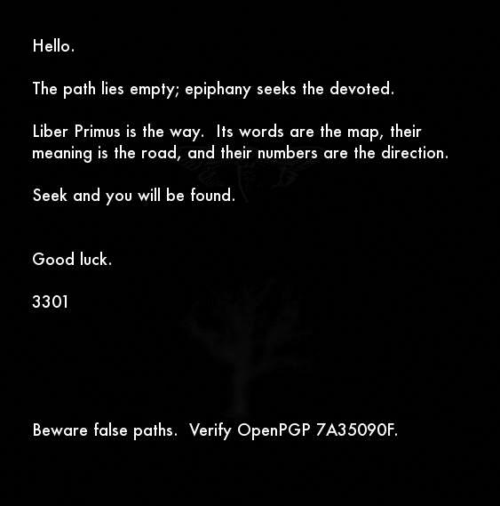

The 2016 and 2017 signed messages
Inspect the archived messages, reproduce extraction and signature checks, and distinguish navigation language from a cipher specification.
On this page
The 2016 and 2017 messages are later communications about Liber Primus and signature verification, not additional numbered manuscript pages. They connect to the book’s language of journeys and false paths, but their verified signatures do not establish any particular interpretation of that language.
The 2016 image and its hidden message

4gq25.jpg, 563 × 569 pixels. Download the original JPEG; a screenshot cannot replace it for extraction.The message points readers back to Liber Primus and relates its wording, meaning and numbers to navigation. It closes with a warning about misleading paths and signature verification. The visible image also carries an OutGuess payload: 1,136 extracted bytes reproduce the pinned archive’s stored output exactly.
The pinned 2016 walkthrough connects the image to the later tweet. Its discussion and the signed file are separate evidence: the file allows a cryptographic check; the walkthrough supplies the historical account of how it circulated.
The faint background uses the same tree seen in Liber Primus. See the shared-tree comparison and the Wikimedia source photograph, whose horizontally flipped branch structure appears in the processed manuscript artwork.
The shorter 2017 message
The later message repeats the warning about false paths and instructs readers to verify signatures from the established key. Its archived armored message uses SHA-512, whereas the 2016 payload’s armor declares SHA-1. These are the declared message-digest algorithms, not a change to the key fingerprint.
The pinned 2017 account reports discovery on 29 April. The signature carries an earlier date. Liberpedia’s download is extracted from that account’s fenced code block, with one final line feed added; it is not presented as a byte-for-byte copy of the original Pastebin response. GnuPG validates this derived armored message.
Signature dates and discovery dates
| Message | Signature timestamp (UTC) | What was checked |
|---|---|---|
| 2016 | 1 January 2016, 00:01:07 | Original JPEG checksum, default-key extraction, exact archived payload match and signature. |
| 2017 | 4 April 2017, 23:23:28 | Derived armored message from pinned archive text and its signature. |
A signature timestamp is metadata supplied by the signer. It is not an independent publication clock or proof of when a reader first received the message. Likewise, a valid signature against the stored key does not verify the signer’s real-world identity. See what signature verification establishes.
What can the navigation language tell us?
The Welcome’s pilgrimage concerns inward change, loss of certainty and emergence. The later message extends navigation language to the book itself. This is a textual connection worth examining; it does not choose a unique cryptographic operation.
For example, a map could motivate a route transposition, a coordinate lookup, a graph walk or a relation between passages. Those are different procedures. A useful proposal names its input arrangement, starting point, movement rule, stopping condition and output rule before checking the resulting text. The compass-proposal guide shows why a suggestive alignment alone does not determine a substitution.
Numerical structure and thematic meaning are not mutually exclusive. Even if a sentence meets a chosen prime-sum constraint, that arithmetic alone does not prove the author could not also choose its theme. Conversely, thematic coherence does not demonstrate a numerical pattern. To assess a proposed 2016–2017 sum sequence, retain the exact message text and specify rune segmentation, punctuation handling, sentence boundaries and the recurrence. The conditional arithmetic is reproduced below; its normalization and terminal-F adjustment are part of the result. See spelling and prime sums for the distinction between a reproducible calculation and an account of how wording was composed.
Reproducing the proposed prime-sum sequence
The February 2024 presentation of the finding explicitly moves the last F of the 2016 message to its beginning. That adjustment matters. The following recount starts with the signed source bodies, preserves the unadjusted results, and then shows exactly what the move changes.
Which text and encoding are counted?
Extract runs of ASCII letters from the signed body, uppercase them and replace V with U. Use the stored alphabet aliases, including K/C, Z/S, ING/NG and IO/IA. Within each letter run, enumerate legal rune encodings and choose the one using the fewest runes. Every actual word in these messages has a unique shortest encoding under this rule. This is a declared transliteration convention, not a recovered instruction in the signature.
Digits and punctuation do not contribute. The letters A and F in the key identifier 7A35090F do contribute, with prime values 97 and 2. Thus “count the message” means neither count every printed character nor discard the entire key identifier. Removing the identifier entirely would reduce each message total by 99.
For 2016, split at periods: group the first three sentences, then the fourth sentence, then everything remaining in the body. The middle group is the sentence relating words, meaning and numbers to navigation. The final group includes the closing instructions, sign-off and verification line. The groups are not simply the file’s three physical paragraphs.
| Group | Original runes | Original sum | After moving F |
|---|---|---|---|
| 2016: first three sentences | 59 | 2999 | 60 runes; 3001 |
| 2016: fourth sentence | 59 | 2819 | 59 runes; 2819 |
| 2016: remaining body | 59 | 2581 | 58 runes; 2579 |
| 2017: full body | 45 | 2131 | Unchanged |
The F is the terminal letter of the key identifier, not an arbitrary F chosen from the prose. Its prime value is 2: moving it adds 2 to the first group and subtracts 2 from the last. The total remains 8399. The three equal rune counts describe the unadjusted grouping; they do not remain equal after the move.
How the recurrence reaches those sums
Start at prime ordinal 464, whose prime is 3301. Subtract Fibonacci values 0, 1, 1, 2, 3, … cumulatively from the ordinal, and look up the prime at each resulting ordinal. This is subtraction from the prime index, not subtraction from the prime value.
| Subtract | Prime index | Prime | Message comparison |
|---|---|---|---|
| 0 | 464 | 3301 | — |
| 1 | 463 | 3299 | — |
| 1 | 462 | 3271 | — |
| 2 | 460 | 3257 | — |
| 3 | 457 | 3229 | — |
| 5 | 452 | 3191 | — |
| 8 | 444 | 3119 | — |
| 13 | 431 | 3001 | 2016 first group, plus F |
| 21 | 410 | 2819 | 2016 middle group |
| 34 | 376 | 2579 | 2016 last group, minus F |
| 55 | 321 | 2131 | 2017 body |
This reproduces the four numerical equalities under the stated rules. The unedited first and third 2016 sums are not those recurrence terms. The 2017 total matches the next listed term, but a later match is not automatically a prediction: establishing a prospective prediction would require a dated record fixing the rule before that message appeared. The linked 2024 presentation does not establish that chronology.
The calculation also leaves interpretation open. It does not identify a keystream, reset schedule, page order or decoding operator for unsolved Liber Primus. A fixed numerical relation can be reproduced without proving its chance probability, authorial intent or usefulness as a cipher key.
Inspect every encoding and recompute
python scripts/later_message_sums.py --checkThe reference-data ZIP includes the reproduction script and complete word-by-word ledger. Python’s standard library is sufficient. The ledger retains source text, all legal encodings, the selected shortest encoding, per-word sums, group totals and every recurrence step. The script checks source message hashes; a separate greedy token walk checks the selected encodings on these actual words, and an independent sieve checks the prime list. These cross-checks concern the implementation, not an independent reading of the intended normalization.
Files and reproduction
Download the 2016 extracted message, 2017 armored message and verification manifest. The manifest records the pinned sources, SHA-256 hashes, derivation, extraction build and GnuPG status output. These are preserved research files; historical links need not remain safe or identify the same content today.
Extract the reference-data ZIP with its folders intact. For the 2016 extraction, also download the original JPEG above to images/message-2016.jpg, or extract the original-images ZIP. With OutGuess installed, run:
python scripts/extract_payload.py message-2016 --outguess outguess --output message-2016.binThe wrapper checks the input and output hashes and refuses to overwrite an existing output. Use the original JPEG; the reference-data ZIP contains the message and manifest but not this carrier image. See OutGuess setup.
For signatures, install GnuPG and create an empty verify-keyring directory. Import the supplied key, inspect its full fingerprint, then verify both messages:
gpg --no-options --homedir verify-keyring --batch --no-auto-key-retrieve --import exports/steganography/cicada-public-key.asc
gpg --no-options --homedir verify-keyring --fingerprint
gpg --no-options --homedir verify-keyring --batch --no-auto-key-retrieve --status-fd 1 --verify exports/steganography/message-2016.outguess.bin
gpg --no-options --homedir verify-keyring --batch --no-auto-key-retrieve --status-fd 1 --verify exports/steganography/message-2017.ascCompare the complete fingerprint 6D854CD7933322A601C3286D181F01E57A35090F, not only the short ID printed in the message. The recorded GnuPG 2.5.21 checks return VALIDSIG for both messages and undefined identity trust. No digest compatibility override was used. Signature verification and checksum matching do not test a proposed cipher or prove an interpretation of the message.
LP2-32 grid correspondence
The 11×11 grid experiment reproduces a first-row sum of 563, first-column sum of 569 and central 5×5 perimeter sum of 1136. These equal the 2016 carrier’s width, height and extracted payload length. The record specifies every cell and the rearrangement; it does not establish intent or statistical significance.